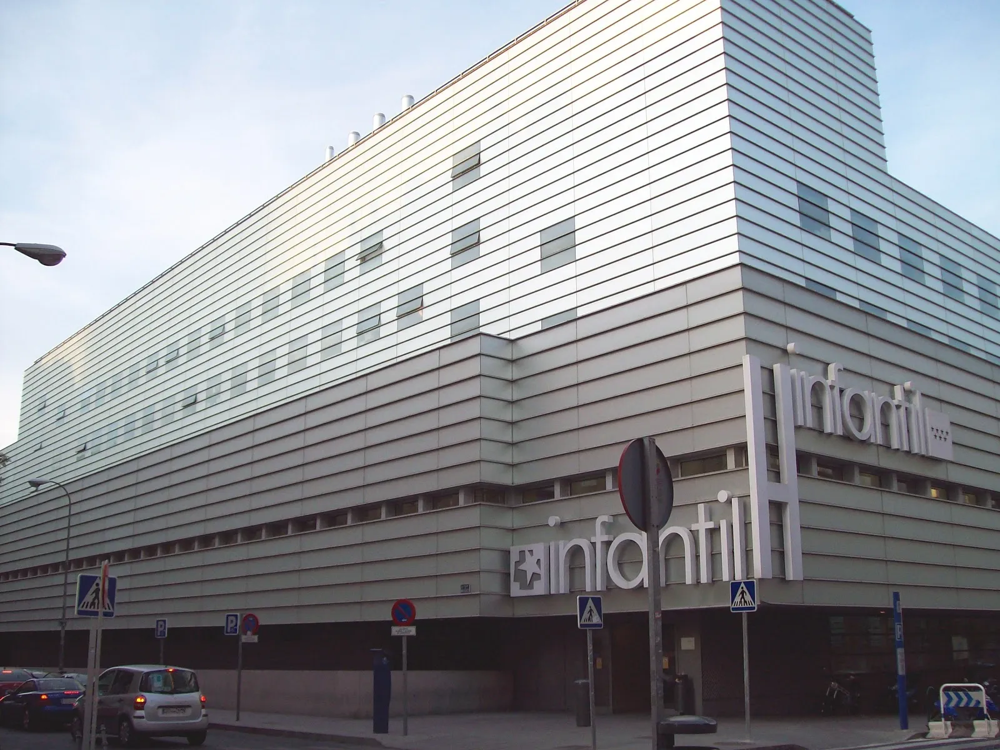
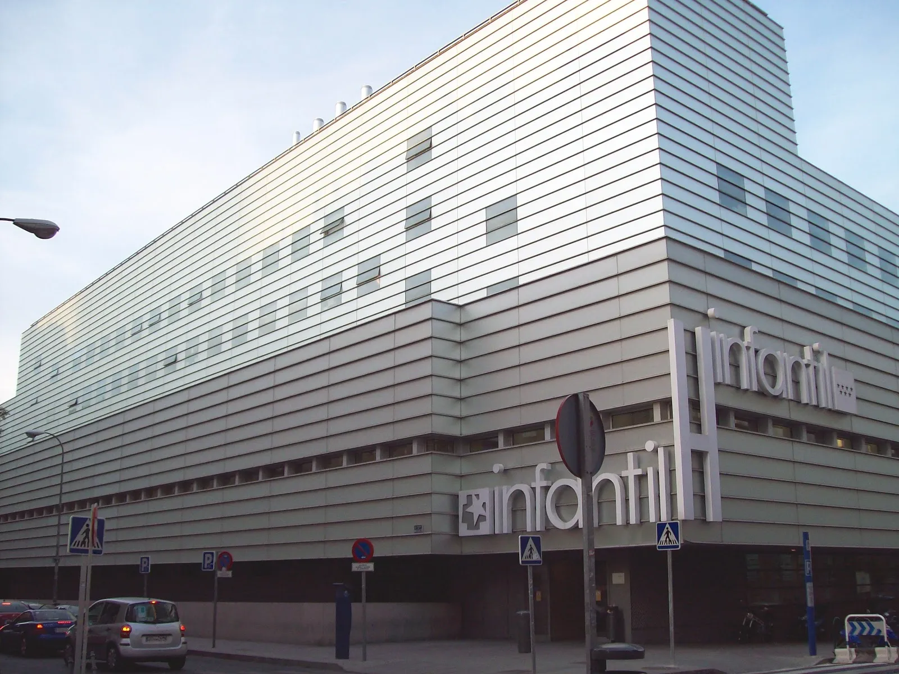
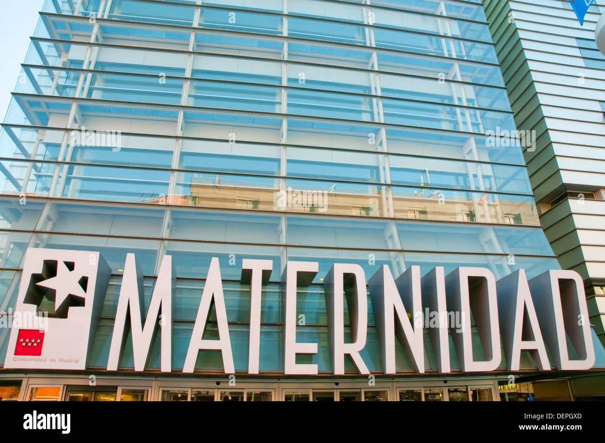

Un renouveau révolutionnaire
 

Soin et Modernité

La Maternité de Madrid est un établissement médical dédié à la santé maternelle et infantile, offrant des soins spécialisés aux femmes enceintes, aux nouveau-nés et aux enfants. Située au cœur de la ville, cette institution médicale de renom s'est taillé une réputation d'excellence dans le domaine des soins obstétriques et pédiatriques.
Fondée en 2003, la Maternité de Madrid s'est engagée à offrir un environnement accueillant et sécurisé pour les femmes enceintes, mettant à leur disposition des installations modernes et des services de qualité En favorisant un environnement chaleureux et rassurant, cette institution s'efforce de rendre l'expérience de la maternité aussi confortable et sûre que possible pour les familles.